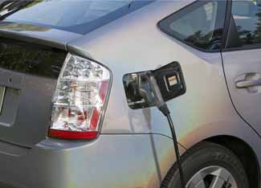
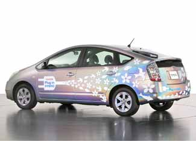

On the outside, the Toyota Prius I’m driving looks about the same as any Prius you’d see on any given day. Aside from the auto-show graphics on the body, the only hint of something unusual on this Prius is the second fuel door on the rear flank of the passenger side. Pop it open and instead of a gas cap, there’s an electrical outlet. This particular Prius is more than just a gasoline-electric hybrid - it’s a plug-in hybrid. The one I’m driving is one of several that Toyota is using to test this promising and advanced technology.
A plug-in hybrid runs solely on electric power for longer periods than a typical hybrid, thanks to extra batteries. And like a typical hybrid, a plug-in taps the gasoline-electric hybrid powertrain when driving distances exceed the electric-only range. Toyota is currently testing a small fleet of plug-in Prius that have an all-electric range of seven miles. Seven miles may not sound like much, but it’s enough for short commutes or errands. While driving on that electric power, a plug-in Prius can achieve the fuel economy equivalent of 100 miles per gallon or more. A conventional Prius gets about 48 mpg in city driving.
Toyota’s Hybrid Synergy Drive system allows its hybrid vehicles to operate on electric power (via batteries and an electric motor), gasoline power (via a small internal combustion engine) or a combination of the two when both are needed. The plug-in version has a second nickel-metal hydride battery pack, which powers the extended electric range unique to the plug-in. The additional batteries fit where the spare tire normally goes. Additionally, Toyota revised the hybrid system’s computer controls to allow the plug-in to operate on all-electric power longer and at higher speeds than in a conventional Prius.
When it’s time to recharge, a simple power cord is connected to the Prius and plugged into a standard 110-volt outlet (the kind we all have in our homes and garages). A full charge will require three to four hours, or just 1 to 1.5 hours if a 220-volt outlet is available.
Power outlets at offices and in parking garages would allow plug-in hybrid drivers to top-off their vehicles while they are at work, thereby doubling the daily all-electric range of the vehicles. If you live close enough to where you work, you might never need gas.
Toyota is testing prototypes of the plug-in Prius in the United States, Japan and France. Additional studies are underway at the University of California at Irvine and at the University of California at Berkeley. These programs are charged with researching consumer expectations of plug-in hybrids. The goal is to determine the sweet spot in the mix of cost, electric range, battery size and charging time to make the best plug-in Prius possible.
Currently, battery price is a major obstacle. Toyota says that plug-in batteries demand $500 for every mile of electric range. So the prototype plug-in’s seven-mile range adds $3,500 to the manufacturing costs of a Prius. (The sticker price of a brand-new Prius is $22,720.)
Will people be willing to pay that much more for the improved gas mileage? Would people pay an extra $5,000 for a 10-mile all-electric range? Only time and the market will tell. Furthermore, the $500 figure goes with nickel-metal hydride batteries, not the more advanced, powerful and expensive lithium-ion batteries regarded by many as the battery of choice for future plug-in hybrids and electric vehicles. Toyota is developing its own advanced battery technology through a joint venture with Panasonic EV Energy Co. The hope is to create something even better than lithium-ion and find breakthroughs and economies of scale that will significantly reduce prices in the future.
If you want a plug-in hybrid before the automakers produce them, it is possible to convert an existing hybrid to a plug-in. There are several third-party companies, such as Hybrids Plus and Hymotion, that do conversions of the Prius and Ford Escape Hybrid. For a longer list of conversion companies, click here. Some of these conversions perform quite well, but they are expensive: Prices range from $6,000 to $30,000 or more, depending on the vehicle and the type of battery. Note that converting your hybrid will void all warranties the automaker provides for the vehicle.
My drive of the plug-in Prius was enlightening. The car was very driver-friendly and I found it easy to operate in all-electric mode. I drove in urban conditions in Detroit. Other than the lack of noise and vibration from the gas engine, the only unusual sensation was a Jetsons-like whir as the car accelerated. With the changes to the computer controls, I could accelerate to 62 mph on pure electric drive, whereas the regular Prius will start the internal combustion engine at about 20 mph. Merging onto the freeway at 60 mph propelled by just the electric motor is a strange feeling, but it is possible to maintain that speed without starting the gasoline engine. I tried a few hard acceleration runs to feel the transition from electric to gas-electric and back. It’s not transparent, but perfectly acceptable.
Toyota isn’t alone in its experiments with plug-in hybrid technology. Ford, GM, Volkswagen and other automakers big and small have plug-in hybrids in the works. The highly anticipated Chevrolet Volt can plug in to recharge, but unlike hybrids or plug-in hybrids, it is propelled strictly by electric drive. The small gas engine is used to recharge the batteries when the electric motor needs more juice.
Consumer demand for significantly better gas mileage is clearly here, making plug-in hybrids a viable product. It may take several years to work out the details and challenges, but the power to plug in will eventually be in our hands.
|
 TOYOTA The idea of recharging a car at home may sound strange, but 100 mpg will probably help you get over that real quick. Plug-in hybrids offer the best of gasoline-electric hybrids and all-electric cars: the ability to drive in pure electric mode (thus zero gas used), a gas engine to fall back on when needed and the ability to recharge at home. |
 TOYOTA Prototype of the plug-in hybrid Toyota Prius. |
|